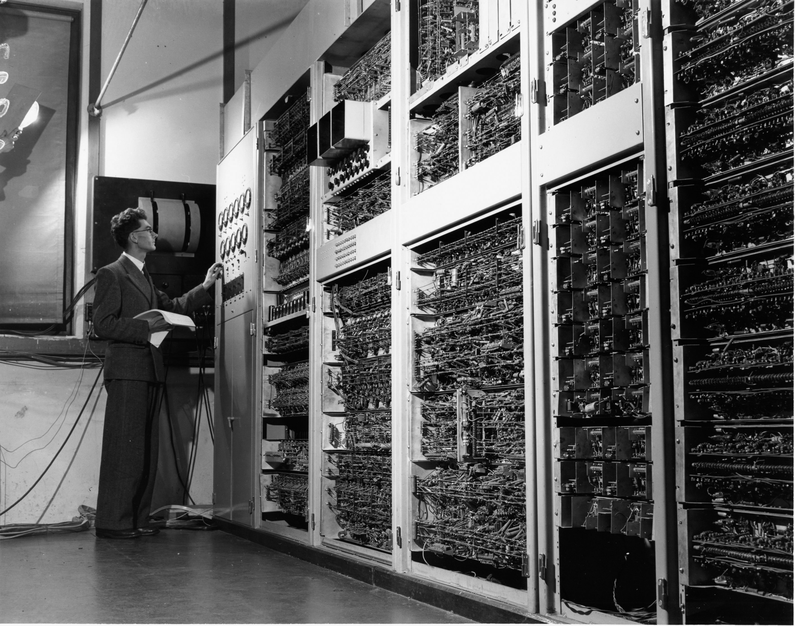

La historia de la computadora representa una de las evoluciones tecnológicas más importantes de la humanidad. Las primeras computadoras eran máquinas enormes, lentas y muy costosas que ocupaban habitaciones completas. Con el paso del tiempo, la tecnología fue avanzando hasta llegar a las computadoras modernas que hoy utilizamos diariamente en casas, escuelas y empresas.
Las computadoras evolucionaron por generaciones. La primera generación utilizaba tubos de vacío, mientras que las generaciones posteriores incorporaron transistores, circuitos integrados y microprocesadores. Gracias a estos avances, las computadoras se volvieron en las computadoras que usamos actualmente.
Actualmente las computadoras forman parte de casi todos los aspectos de la vida cotidiana, ya que permiten realizar tareas académicas, trabajos empresariales, entretenimiento, comunicación y almacenamiento de información.
Un ejemplo claro de la evolución de las computadoras es comparar una computadora antigua con una laptop moderna. Antes una computadora podía tardar minutos en realizar cálculos sencillos, mientras que hoy una laptop puede ejecutar programas complejos, videojuegos y conexión a internet al mismo tiempo.
Elegí este tema porque me parece muy interesante el hecho de como ha ido avanzando conforme el tiempo las computadoras y me parece interesante el modelo von neuman pues gracias a ese es que las computadoras son lo que son actualmente por eso elegi este tema.
La historia de la computadora se aplica en la educación, la investigación tecnológica y el desarrollo de nuevos sistemas informáticos. Además, siempre ayuda a las nuevas generaciones a saber mas o menos como se crearon las computadoras y a tener el conocimiento para poder seguir creciendo.
Volver al inicio